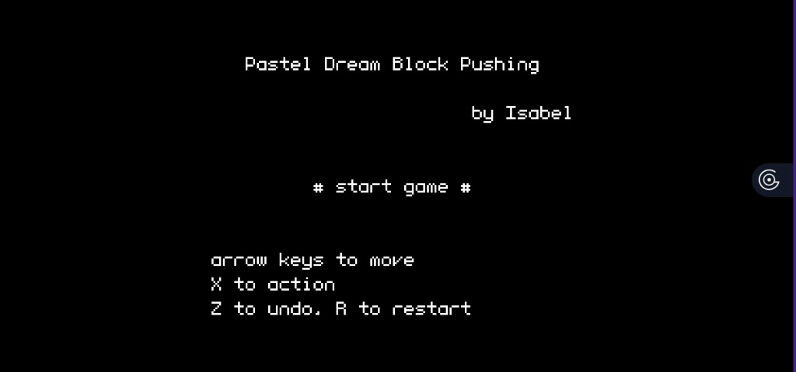
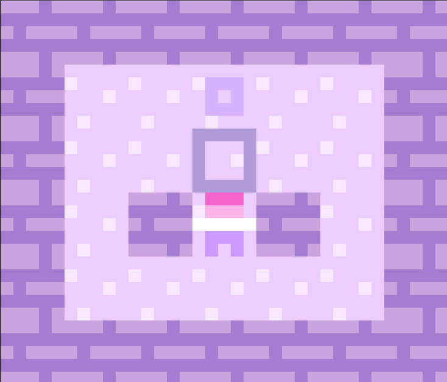
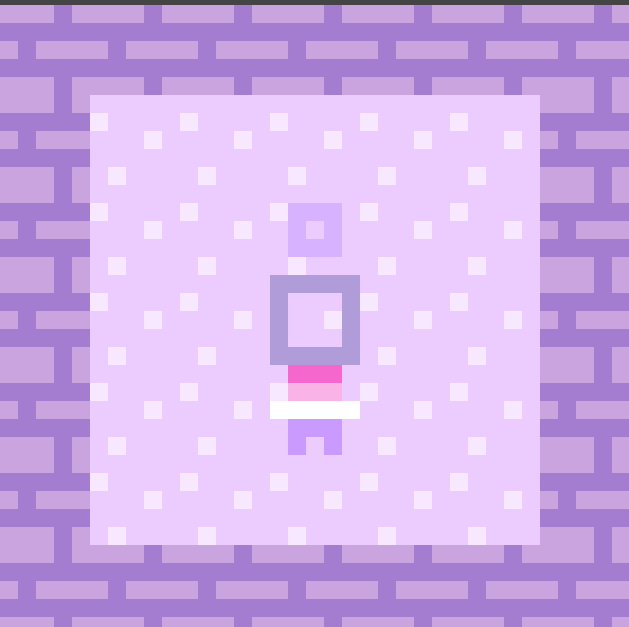
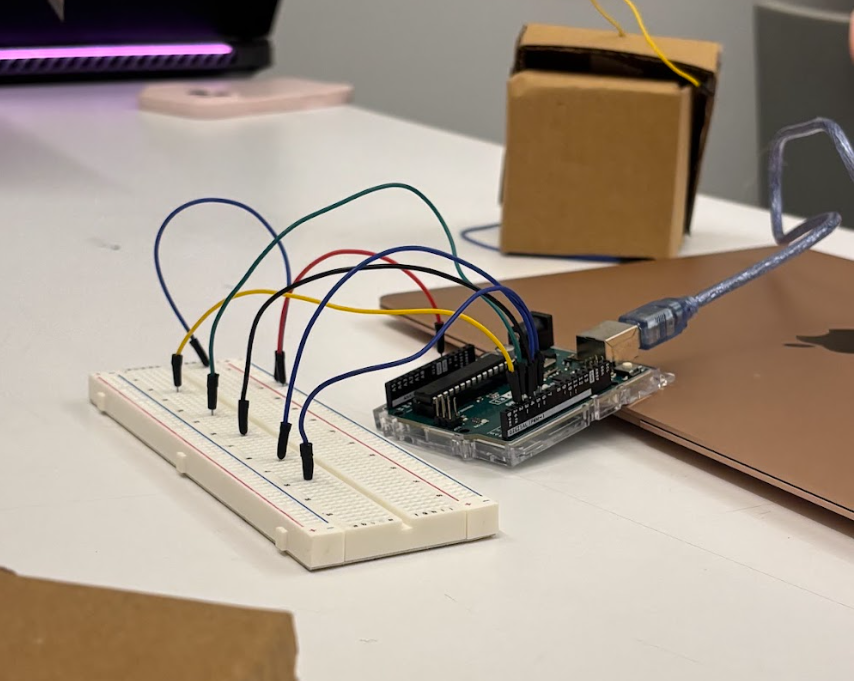

Queering the Controller is a group project that asks what happens when you challenge the norms of how games are played, perceived, and controlled. We built a game and a custom controller to explore accessibility, trust, and collective play—not as a generic design exercise, but as a deliberate push against visual dominance and assumed sightedness in games.
Our definition of “queering” here means challenging normatives and embracing the weird: not assuming every player sees the screen, not treating the controller as stable or neutral, and not leaving control entirely in one person’s hands. The final experience centers on trust, deception, and communication under uncertainty—where control is socially negotiated rather than individual.
One player is the blindfolded “Blind Player” using a five-button controller whose mapping shifts each round. Other players guide them through obstacles and block placement, but not everything responds as expected—and there is an imposter trying to confuse the group. After each level, players vote, but the Blind Player decides who is eliminated. Fail to identify the imposter and the imposter wins. The system destabilizes vision, input consistency, and authority into a collective, unreliable, political experience.
I worked as game developer and programmer alongside Silvia, building puzzle and level-based games including Pastel Dream Block Pushing, a Sokoban-style experience in PuzzleScript, Unity prototypes, and Sweet Dreams (Just Kidding)—pixel-art puzzle games I programmed with arrow keys, action, undo, and restart. Crystal designed and built the tactile “queering controller” with varied textures, Arduino integration, and Python bridging. Our process moved from early sketches through cardboard prototypes to classroom playtesting and final documentation.
Traditional games assume full visibility, stable controllers, and individual control. Ours inverts that: the main player cannot see, the controller reshuffles, and information is always indirect. Themes of sighted vs. non-sighted, authority vs. dependence, and trust vs. deception run through every round—inviting empathy for players who navigate games without sight while making every session a negotiation of who actually holds power.



